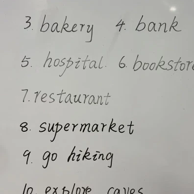

生电玩家 · 刘慈欣书迷 · 代码折腾者
- B 站投稿
- 19
- 粉丝
- 76
- 个长梦
- 1
关于
随和，慢性子，偶尔犯懒。
喜欢在 Minecraft 里搭红石机器 —— 生电这块还是个小萌新，但看着机器自己跑起来的那一刻，是真会上瘾。也喜欢在编辑器里跟编译器较劲，敲点没什么用但很好玩的小玩意儿。
看刘慈欣的书，听音乐，看风景。“面壁”在《三体》里是面壁计划；签名里那句“面壁十年”，出自周恩来。
梦想是走遍全世界：慢慢来，但一定要去。

一些数字
B 站数据截至 2026.11
在折腾什么
-
Minecraft 生电 redstone
红石机器爱好者，自称小萌新。喜欢自动化搭起来之后，那种“它自己会跑”的安静。
-
科幻与刘慈欣 fiction
看他的书，也看他把人的尺度放到宇宙里去量。《三体》的面壁计划，和签名里那句“面壁十年”，在我这儿是同一个姿势。
-
写代码 code
爱折腾各种小玩意儿，想到什么就动手试试。GitHub 上零零散散放了一些。
-
音乐与风景 wander
耳机里放着歌，看窗外往后跑。走遍世界这件事，是早晚要做的。
书单
如果你也是从《三体》进来的，这几本可以接着读。
-
《三体》三部曲 2006–2010
面壁计划、黑暗森林、死神永生。先把这套读完，再读别的。
-
《球状闪电》 2004
宏电子、量子玫瑰，还有一场只在被观察时才存在的雨。
-
《超新星纪元》 1991
超新星爆发之后，世界被交到孩子手里。
-
《乡村教师》 2001
一间山村教室，和一场宇宙尺度的战争。
-
《诗云》 2003
一个神级文明拆掉太阳系，只为存下所有可能的诗。
先读《三体》，再往外走；不是必读顺序。
两句话
“It must achieve in the long dream of life, not the short dream of game.”
要在人生这场长梦里有所成就，而不是在游戏的短梦里。
On the wall for ten years, to break through; failing to cross the sea, still a hero.
面壁十年图破壁
难酬蹈海亦英雄
周恩来
诗云
刘慈欣写过一篇《诗云》—— 一个神级文明把整个太阳系拆了，用来存下所有可能的诗。我摘了几句自己认的话，散在这片星海里。靠近它们，会亮一点。
面壁十年图破壁，难酬蹈海亦英雄
—— 周恩来
关于这个页面
没有框架，没有构建步骤。想改哪儿，改哪儿。
- 结构
- 一个文件夹装下全部 —— HTML、CSS、脚本、字体、头像都在里面。
- 字体
- Gloock 拉丁字面随站点本地加载；中文走系统衬线字体，不请求外部字体服务。
- 零外部请求
- 没有 CDN、统计脚本或第三方请求，断网也能看。
- Canvas
- 首屏轨道是 SVG；诗云星图是 Canvas 2D，按需重绘。
- 动效
- 版块进视口时轻轻上浮，章节标题逐字写出；以 transform、opacity 和颜色为主，尊重系统的减少动态设置，可以随时关掉。
- 手写
- 没有依赖，没有编译。一个 HTML、一个 CSS、一个脚本，读完就能改。
找到我
B 站、GitHub、邮箱，三个地方都能找到我。